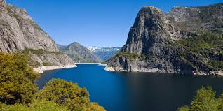
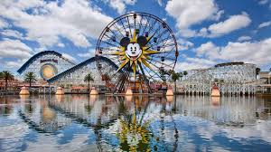
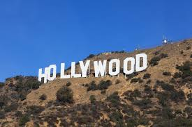

YOSMITE NATIONAL PARK:

Yosemite National Park is in California’s Sierra Nevada mountains. It’s famed for its giant, ancient sequoia trees, and for Tunnel View, the iconic vista of towering Bridalveil Fall and the granite cliffs of El Capitan and Half Dome. In Yosemite Village are shops, restaurants, lodging, the Yosemite Museum and the Ansel Adams Gallery, with prints of the photographer’s renowned black-and-white landscapes of the area.
Established: 1 October 1890
Management: National Park Service, Sierra Nevada.
DISNEYLAND PARK:

Originally Disneyland, is the first of two theme parks built at the Disneyland Resort in Anaheim, California, opened on July 17, 1955. It is the only theme park designed and built to completion under the direct supervision of Walt Disney.
Address: 1313 Disneyland Dr, Anaheim, CA 92802, USA
Opened: 17 July 1955
Founder: Walt Disney
GOLDEN GATE BRIDGE:
 Suspension bridge in San Francisco, California
DescriptionThe Golden Gate Bridge is a suspension bridge spanning the Golden Gate, the one-mile-wide strait connecting San Francisco Bay and the Pacific Ocean.
Total length: 8,981′
Suspension bridge in San Francisco, California
DescriptionThe Golden Gate Bridge is a suspension bridge spanning the Golden Gate, the one-mile-wide strait connecting San Francisco Bay and the Pacific Ocean.
Total length: 8,981′
Construction started: 5 January 1933
Height: 746′
Location: San Francisco, Marin County
Did you know: There are approximately 600,000 rivets in each Golden Gate Tower.
HOLLYWOOD SIGN:

Historical landmark in Los Angeles, California
DescriptionThe Hollywood Sign is an American landmark and cultural icon overlooking Hollywood, Los Angeles, California. It is situated on Mount Lee, in the Hollywood Hills area of the Santa Monica Mountains. "HOLLYWOOD" is spelled out in 45-foot-tall white capital letters and is 350 feet long.
Address: Los Angeles, CA, USA
Construction started: 1923
Opened: 1923
Designated as world heritage site: 7 February 1973
SANTA MONICA PIER:
 Visitor center in Santa Monica, California
DescriptionThe Santa Monica Pier is a large double-jointed pier at the foot of Colorado Avenue in Santa Monica, California that is over 100 years old. With a breakwater constructed in 1934.
Visitor center in Santa Monica, California
DescriptionThe Santa Monica Pier is a large double-jointed pier at the foot of Colorado Avenue in Santa Monica, California that is over 100 years old. With a breakwater constructed in 1934.
Address: 200 Santa Monica Pier, Santa Monica, CA 90401, USA
Locale: Santa Monica
Designated as world heritage site: 17 August 1976
Did you know: The original Muscle Beach used to be located just south of the Santa Monica Pier.